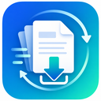

欢迎使用 Freepaper
导入 DOI 或论文链接后，Freepaper 会帮助你打开论文页面、识别 PDF、管理批量任务、处理重复文献并汇总结果。
合规边界：Freepaper 只在用户已有合法访问权限的前提下工作，不绕过付费墙、机构权限或安全验证。

导入 DOI 或论文链接后，Freepaper 会帮助你打开论文页面、识别 PDF、管理批量任务、处理重复文献并汇总结果。
当前不支持直接导入 XLSX。可先在 Excel 中另存为 UTF-8 CSV。
doi,url,title 10.48550/arXiv.2010.08895,https://arxiv.org/pdf/2010.08895,Fourier Neural Operator ,https://ieeexplore.ieee.org/document/9282004,Physics-Informed Neural Networks for Power Systems
程序不会自动操作验证码，也不会模拟真实鼠标。页面助手会分别提示“机构账号认证”“出版商账号登录”“人机验证”“购买/无权限”或“等待下载”；只有无法确认 PDF 入口时才请求用户接管。
导入文件、检查论文、启动任务、设置下载目录和导出结果。
持续显示当前论文、整体进度、暂停、跳过和终止按钮。关闭后后台任务仍继续。
在需要机构认证、出版商登录、人机验证、权限确认或等待下载时，给出当前步骤的具体提示。